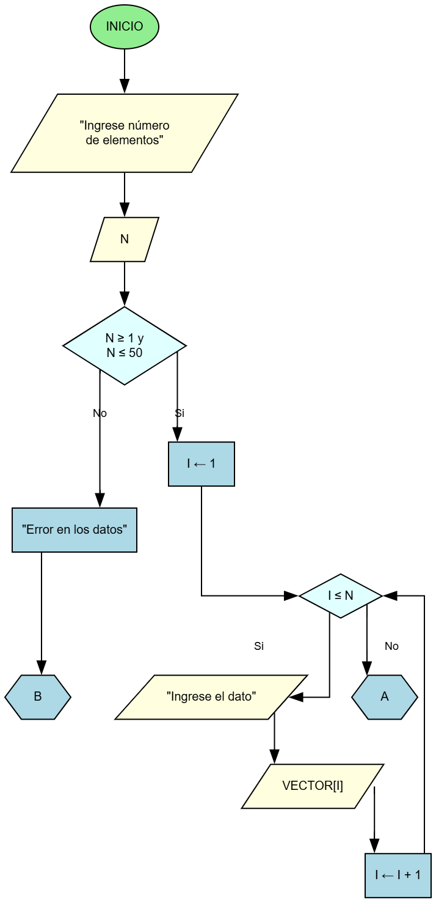
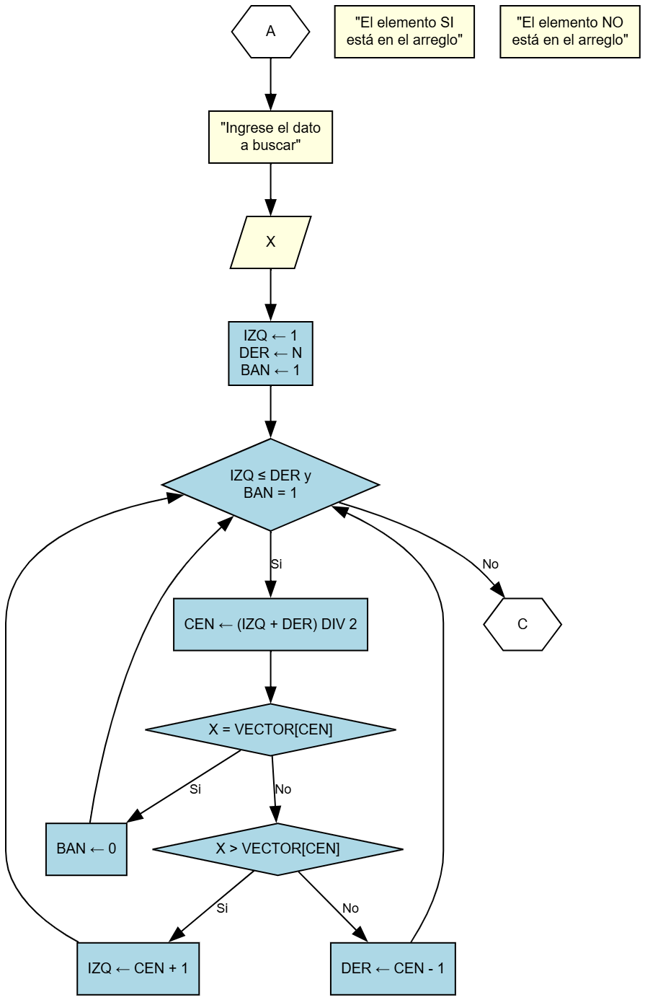
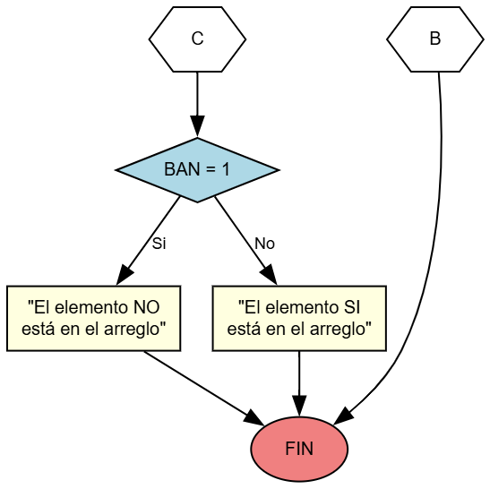

La búsqueda binaria consiste en dividir el intervalo de búsqueda en dos partes y comparar el elemento buscado con el elemento central del arreglo. En caso de ser diferentes, se deben redefinir los extremos del intervalo considerando si el elemento a buscado es mayor o menor que el elemento que se encuentra en la posición central.
VECTOR[1..N]: Arreglo unidimensional de tipo entero (1 ≤ N ≤ 50)X: Variable que representa el dato a buscarN: Total de componentes del arregloI: Índice del arreglo y variable de controlX: Dato a buscarIZQ: Extremo izquierdo del intervaloDER: Extremo derecho del intervaloCEN: Centro del intervaloBAN: Bandera para control de búsquedaEl método de búsqueda binaria es eficiente para arreglos ordenados porque:
En las siguientes tres tablas se puede observar el seguimiento del algoritmo para diferentes corridas.
VECTOR:
| 5 | 12 | 14 | 18 | 21 | 33 | 38 | 45 | 52 | 65 | 76 |
| 1 | 2 | 3 | 4 | 5 | 6 | 7 | 8 | 9 | 10 | 11 |
| N | X | IZQ | DER | BAN | CEN | X = VECTOR[CEN] | X > VECTOR[CEN] | RESULTADO |
|---|---|---|---|---|---|---|---|---|
| 11 | 65 | 1 | 11 | 1 | 6 | 65 = 33? NO | 65 > 33? SI | |
| 7 | 9 | 65 = 52? NO | 65 > 52? SI | |||||
| 10 | 0 | 10 | 65 = 65? SI | "El elemento SI está en el arreglo" |
| N | X | IZQ | DER | BAN | CEN | X = VECTOR[CEN] | X > VECTOR[CEN] | RESULTADO |
|---|---|---|---|---|---|---|---|---|
| 11 | 18 | 1 | 11 | 1 | 6 | 18 = 50? NO | 18 > 33? NO | |
| 5 | 3 | 18 = 14? NO | 18 > 14? SI | |||||
| 4 | 0 | 4 | 18 = 18? SI | "El elemento SI está en el arreglo" |
| N | X | IZQ | DER | BAN | CEN | X = VECTOR[CEN] | X > VECTOR[CEN] | RESULTADO |
|---|---|---|---|---|---|---|---|---|
| 11 | 55 | 1 | 11 | 1 | 6 | 55 = 33? NO | 55 > 33? SI | |
| 7 | 9 | 55 = 52? NO | 55 > 52? SI | |||||
| 10 | 10 | 55 = 65? NO | 55 > 65? NO | |||||
| 9 | "El elemento NO está en el arreglo" |
Parte A: Lectura del arreglo y validación de datos
Parte B: Proceso de búsqueda binaria
Parte C: Resultado de la búsqueda
package com.tutortics;
public class ejemplo_4_7 {
private int[] vector;
private int n;
public ejemplo_4_7(int tamano) {
if (tamano < 1 || tamano > 50) {
throw new IllegalArgumentException("El tamaño debe estar entre 1 y 50");
}
this.n = tamano;
this.vector = new int[tamano];
}
/**
* Inserta un valor en el arreglo en orden ascendente.
* @param valor El valor a insertar
* @param posicion La posición donde insertar (base 0)
*/
public void insertarValor(int valor, int posicion) {
if (posicion < 0 || posicion >= n) {
throw new IllegalArgumentException("Posición inválida");
}
vector[posicion] = valor;
}
/**
* Implementa el algoritmo de búsqueda binaria.
* @param x El valor a buscar
* @return true si el elemento fue encontrado, false en caso contrario
*/
public boolean busquedaBinaria(int x) {
int izq = 0;
int der = n - 1;
int cen;
boolean ban = true;
while (izq <= der && ban == true) {
cen = (izq + der) / 2;
if (x == vector[cen]) {
ban = false; // Elemento encontrado
} else if (x > vector[cen]) {
izq = cen + 1;
} else {
der = cen - 1;
}
}
return !ban; // true si se encontró, false si no
}
public static void main(String[] args) {
// Ejemplo de uso
ejemplo_4_7 buscador = new ejemplo_4_7(10);
// Insertamos valores ordenados
int[] valores = {1, 3, 5, 7, 9, 11, 13, 15, 17, 19};
for (int i = 0; i < valores.length; i++) {
buscador.insertarValor(valores[i], i);
}
// Probamos la búsqueda
int valorBuscado = 7;
boolean encontrado = buscador.busquedaBinaria(valorBuscado);
System.out.println("Búsqueda del valor " + valorBuscado + ":");
if (encontrado) {
System.out.println("El elemento SÍ está en el arreglo");
} else {
System.out.println("El elemento NO está en el arreglo");
}
}
}Este archivo contiene la estructura básica sin la lógica implementada, para que el estudiante la complete:
Archivo: src/main/java/com/tutortics/ejemplo_4_7_Estudiante.java
💡 Actividad para el estudiante:
Completa los métodos marcados con // TODO en el archivo ejemplo_4_7_Estudiante.java
Pistas: